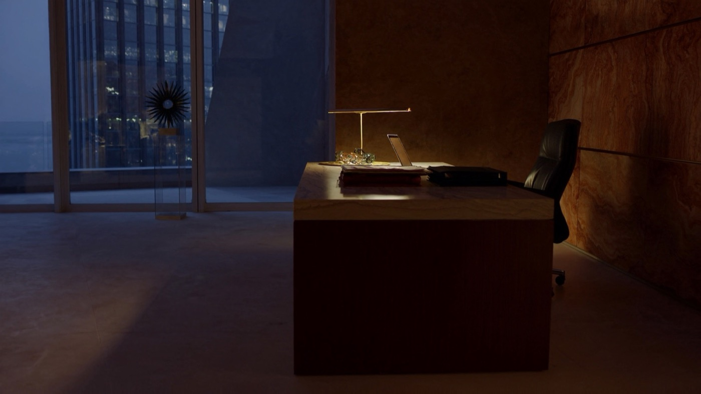
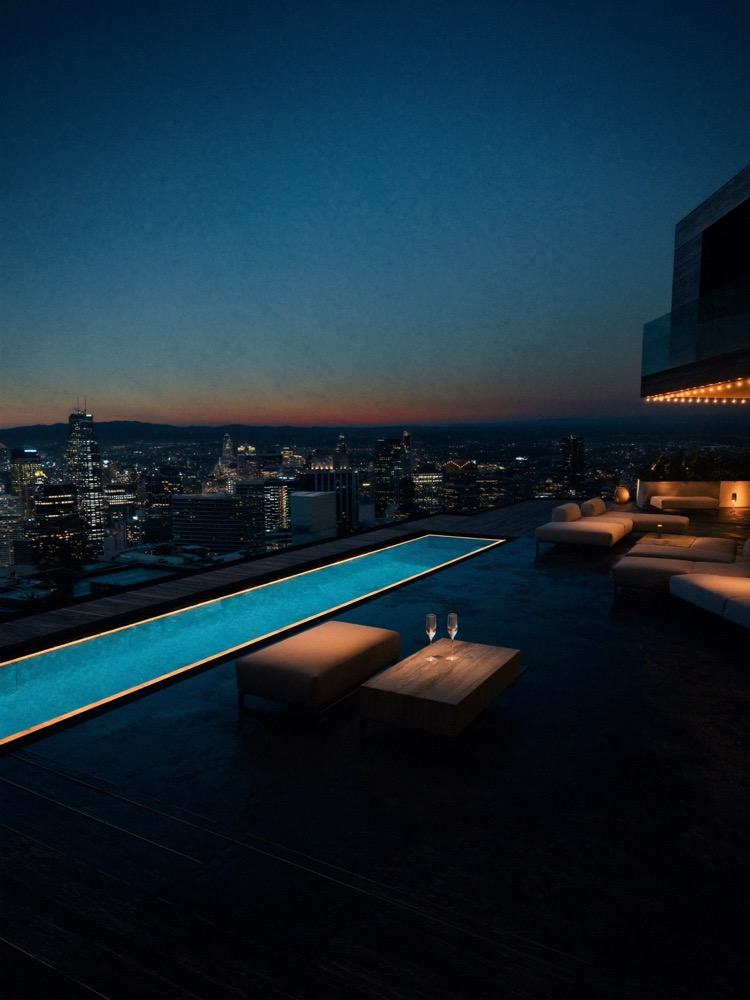

MARK.
SUL TUO COMPUTER.
Lo stesso dei miei video.
Lo accendiamo insieme, in videochiamata.

Cam 01 · Lo studioRec23:04 · Mark al lavoro● L'era degli agenti
LA TUA AZIENDA,
agentica.
Vent'anni fa la parola era digitalizzare. Oggi è agentica: agenti AI che lavorano nella tua azienda, sui tuoi programmi, giorno e notte.
Chi è arrivato tardi al digitale se lo ricorda ancora.

Cam 02 · RooftopLiveANCHE
DAL TELEFONO.
Gli scrivi o gli mandi un vocale su Telegram, ovunque tu sia. Ti risponde a voce.
UNA SQUADRA
CHE LAVORA PER TE.
Tu dai l'ordine. Mark lo divide tra gli agenti, che si passano il lavoro.
GLI PARLI.
TI RISPONDE.
A voce, quando vuoi. Ti chiama «signore», se vuoi anche quello.
SI RICORDA
TUTTO.
Clienti, progetti, decisioni. Ogni giorno sa qualcosa in più del tuo lavoro.
NON TI SERVE
UN TUTORIAL.
Da solo
Mesi di prove
Voce lenta
Memoria che si azzera
Con me
Un'ora di call
Già collaudato
Acceso quando chiudi
TRE PASSI
10 POSTI
A OTTOBRE.
Ogni Mark lo accendo io, con te.
DOMANDE
Devo saper programmare?
No. Si installa da solo, passo per passo, e in call ci sono io.
Funziona su Windows?
Sì, su Mac e su Windows. Va bene il computer che usi già.
Quanto costa al mese?
Con me nessun abbonamento. Serve il tuo abbonamento Claude, da circa 20 € al mese: è il suo cervello.
I miei dati?
Restano sul tuo computer. E niente esce a nome tuo senza il tuo sì.
Non ho un'azienda. Mi serve?
Se hai un lavoro, dei progetti o dei clienti, sì. Lo uso anche per la vita di tutti i giorni.
 Cam 03 · CasaRec
Cam 03 · CasaRec